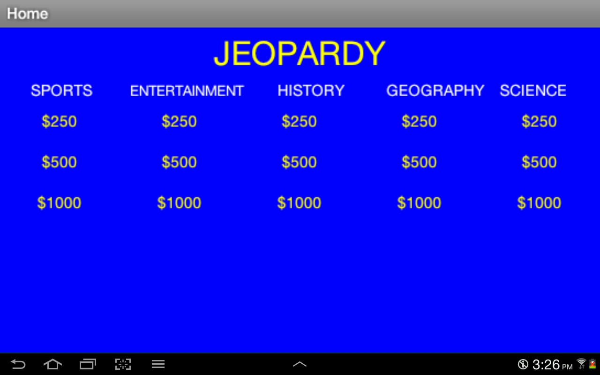

Welcome to our Android Project! Our game is a remake of "Jeopardy". The goal of the game is to select a question from various categories, and answer that question. If you answer the question incorrectly, then you will be told so, and returned to the home screen. If you answer correctly, you will be told so and returned to the home screen.
"I really enjoyed working on this project. It was very helpful in helping me understand how a computer thinks its way around a piece of code. I just wish that we had been able to get the score feature working in time to turn it in." - Trevor Matteson
This is a screenshot of the app in work. In this scene, the player is in the "Home" screen and they are about to select a question to then answer.
This snippet of code is showing the process of the app deciding whether the user got the question right or wrong. This took us a while to figure out, because we couldn't figure out how to get the app to wait a second before returning to the home screen, so that the user can read a message of whether they got the question wrong or right.